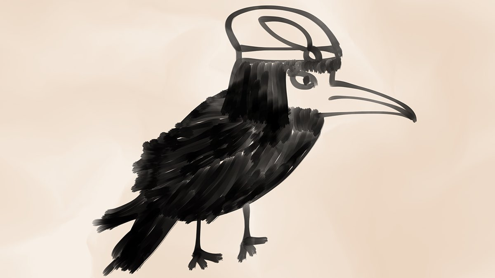
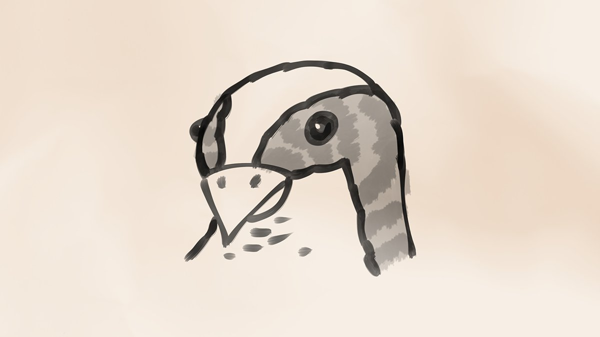

I’m having trouble choosing a running away story. What do you think?
Running away from home 22.2%
Running away from a girl 44.4%
Running away from danger 33.3%
30th of Mirtul, 1494 DR 11:30 PM
I’m starting to feel better now. I had a bath to clean off all the dirt. Now my hair is fluffy.
1st of Kythorn, 1494 DR 2:34 PM
I’m going to practice my letters then play Rebecca.
1st of Kythorn, 1494 DR 2:41 PM
Look at how good I’m getting.

1st of Kythorn, 1494 DR 5:21 PM
Good choice everyone! This story is about running away but it’s also about my hair. It goes like this.
1st of Kythorn, 1494 DR 11:06 PM
About a year ago, I met a girl wizard on the way to Waterdeep. Her name was Nene and she was very nice and told me I have pretty hair, which is true.
1st of Kythorn, 1494 DR 11:07 PM
She wasn’t a very good wizard and needed my help for some reason. I don’t remember why. But I had to be in disguise, so she used magic to make my hair red.
1st of Kythorn, 1494 DR 11:08 PM
When we were done, she tried to make my hair black again but the spell didn’t work all the way. I was pretty upset.
1st of Kythorn, 1494 DR 11:09 PM
She told me to come and visit her the next morning so she could fix the rest of my hair but I got scared and ran away. That’s the end of the story.
1st of Kythorn, 1494 DR 11:09 PM
Thank you for listening to my story everyone.
1st of Kythorn, 1494 DR 11:10 PM
@RogueMostLikely replied…
Replying to @RogueMostLikely
No Nene was nice I don’t want revenge.
2nd of Kythorn, 1494 DR 12:12 AM
@RogueMostLikely replied…
I invented a good idea. Instead of answering my questions, you get to ask me questions! Ask Sulkie!
1st of Kythorn, 1494 DR 11:42 PM
Replying to @It_hit_the_fan
I think I stole it from a shop. It’s blue and I love it.
2nd of Kythorn, 1494 DR 12:06 AM
Replying to @It_hit_the_fan
No my favourite colour is red but blue is also good.
2nd of Kythorn, 1494 DR 12:10 AM
I like where I am now. Breadstick and Rebecca and Jurian are all here.
2nd of Kythorn, 1494 DR 1:30 PM
I like bread but I also like warm stew with bits of meat in it. You can even dip bread in the sauce!
2nd of Kythorn, 1494 DR 1:36 PM
Nene was able to fix most of my hair. Only a little bit stayed red. I don’t know why I had to run away but I feel bad about it sometimes.
2nd of Kythorn, 1494 DR 10:48 PM
What if the Great Path tells me to leave?
2nd of Kythorn, 1494 DR 10:44 AM
I think maybe it won’t because the Great Path always takes me where I need to go.
2nd of Kythorn, 1494 DR 11:06 AM
I had a dream about a magic forest. I wonder if I’ll go there someday?
2nd of Kythorn, 1494 DR 11:53 AM
Why aren’t more people asking me questions? Am I not interesting enough? 😢😢
2nd of Kythorn, 1494 DR 11:59 AM
It’s just you and me, Breadstick. 😩
2nd of Kythorn, 1494 DR 12:07 PM
If you’re nice to me I’ll forgive you.
2nd of Kythorn, 1494 DR 1:35 PM
OK I forgive you now.
2nd of Kythorn, 1494 DR 1:39 PM
Wow yes. Do you need directions?
2nd of Kythorn, 1494 DR 1:42 PM
OK I will try and remember how to get to it.
2nd of Kythorn, 1494 DR 1:45 PM
@RogueMostLikely replied…
Replying to @RogueMostLikely
AeKeek is an adult bird not a pet.
2nd of Kythorn, 1494 DR 2:16 PM
I can’t remember how to get here but if you go to the market it’s nearby. So is the kingdom of the cats so if you find the kingdom I can direct you.
2nd of Kythorn, 1494 DR 2:38 PM
@RogueMostLikely replied…
Replying to @RogueMostLikely
How can anyone understand those directions? No wonder everyone is lost all the time.
2nd of Kythorn, 1494 DR 3:36 PM
Why?
2nd of Kythorn, 1494 DR 2:17 PM
I don’t really get it but everyone is different so it’s OK.
2nd of Kythorn, 1494 DR 2:34 PM
Because nobody likes me I’ll do my letters instead.

2nd of Kythorn, 1494 DR 1:20 PM
Good. OK I like you too.
2nd of Kythorn, 1494 DR 2:17 PM
Thank you everyone for asking me questions today. I wasn’t really mad before I was just pretending.
2nd of Kythorn, 1494 DR 11:01 PM
Also you can still ask more questions if you want!
2nd of Kythorn, 1494 DR 11:01 PM
AeKeek is coming to visit! What should we draw together?
Write our names 33.3%
Draw our faces 66.7%
2nd of Kythorn, 1494 DR 11:30 PM
Breadstick is sitting on me and now I can’t get up.
3rd of Kythorn, 1494 DR 1:24 PM
Today I fed the cats, practiced my letters, and played music for Breadstick. I’m not very good at the last one.
3rd of Kythorn, 1494 DR 8:19 PM
Breadstick is very hard to please with music.
3rd of Kythorn, 1494 DR 8:20 PM
When I see other people play the rebec there’s not as much squeaking.
3rd of Kythorn, 1494 DR 9:26 PM
Most people want me and AeKeek to draw our faces together!
3rd of Kythorn, 1494 DR 11:01 PM
Hello @AarAekeekra I already drew my face so when you get here you can draw yours on the other side!
3rd of Kythorn, 1494 DR 11:03 PM
What do you think is a better way of giving directions?
Landmarks and turns 87.5%
Name of the place 12.5%
3rd of Kythorn, 1494 DR 11:29 PM
I don’t trust maps. How can you start from a different place and take different turns and end up where you wanted? It doesn’t make sense.
4th of Kythorn, 1494 DR 12:47 AM
I have a great idea for my question today. I’m so excited.
4th of Kythorn, 1494 DR 2:11 PM
Oh I just realised I’m supposed to make notes on Rebecca by pressing the strings.
4th of Kythorn, 1494 DR 3:33 PM
I’m going to take Breadstick for a walk. Can’t let kitty get fat.
4th of Kythorn, 1494 DR 4:08 PM
Just got back from my walk. Breadstick gave up and I had to carry the silly kitty the rest of the way.
4th of Kythorn, 1494 DR 5:47 PM
I don’t think so but I’ll ask.
4th of Kythorn, 1494 DR 10:37 PM
OK I asked and Breadstick wanted a tummy rub so I think everything is fine.
4th of Kythorn, 1494 DR 10:46 PM
Landmarks and turns is the best way of giving directions and it’s been confirmed! Hey @RogueMostLikely I told you so!
4th of Kythorn, 1494 DR 11:02 PM
If I was a wild animal, what animal would I be?
Bear 11.1%
Fox 33.3%
Raven 55.6%
Owl 0%
4th of Kythorn, 1494 DR 11:32 PM
Think hard about my personality and my best features.
4th of Kythorn, 1494 DR 11:33 PM
@AarAekeekra sent a message…
I think so. Wynna keeps threatening to raise the price on our room.
5th of Kythorn, 1494 DR 12:30 PM
@RogueMostLikely replied…
Replying to @RogueMostLikely
… Yes.
5th of Kythorn, 1494 DR 8:48 PM
😮🤫🤗
6th of Kythorn, 1494 DR 8:32 AM
I thought I was more like a fox, but I guess not. I drew this picture with my imagination.

5th of Kythorn, 1494 DR 11:02 PM
I’ve been thinking about something serious. Should I find a new place to live so that Jurian isn’t bothered anymore?
5th of Kythorn, 1494 DR 11:30 PM
@RogueMostLikely replied…
Replying to @RogueMostLikely
I know but me and Breadstick take up a lot of space and I leave ink stains everywhere and it smells because we have to keep the windows closed or Breadstick will run away.
5th of Kythorn, 1494 DR 11:56 PM
@RogueMostLikely replied…
Replying to @RogueMostLikely
Good idea.
6th of Kythorn, 1494 DR 12:02 AM
It’s been a while since I’ve felt the pull of the Great Path.
6th of Kythorn, 1494 DR 5:03 PM
Hi @RogueMostLikely looks like I’ll be in your hair for a while longer! We’re sisters forever!
6th of Kythorn, 1494 DR 10:33 PM
I still want to help Jurian somehow. Should I get a job and help pay for the room?
6th of Kythorn, 1494 DR 11:01 PM
I already help her get information around the city sometimes but I want to do more.
6th of Kythorn, 1494 DR 11:13 PM
AeKeek is a good teacher, but I am a terrible learner. We took a time out because I was getting frustrated.
7th of Kythorn, 1494 DR 11:21 AM
I’m patient! I just don’t get these puzzle maze things. How am I supposed to know which way is the shortest without measuring?
7th of Kythorn, 1494 DR 12:03 PM
Yes we should try that because I still can’t get my head around this map.
7th of Kythorn, 1494 DR 6:18 PM
I’m not scared unless the Great Path tells me so. But let’s start low just in case.
7th of Kythorn, 1494 DR 6:21 PM
AeKeek and Breadstick actually get along! So surprising!
7th of Kythorn, 1494 DR 4:48 PM
Thank you so much for the feathers, they will make a wonderful toy! But remember some of those mice are mine.
7th of Kythorn, 1494 DR 6:19 PM
OK I believe you.
7th of Kythorn, 1494 DR 6:22 PM
Good decision everyone. I will get a job and help pay for the room.
7th of Kythorn, 1494 DR 10:41 PM
I’ve decided to get a job. What should I be?
Waitstaff 14.3%
Messenger 71.4%
Rat Catcher 14.3%
7th of Kythorn, 1494 DR 11:00 PM
I had lots of fun with my friend AeKeek today. We learned that I am more comfortable on the ground.
8th of Kythorn, 1494 DR 1:39 AM
And I think I understand how maps work now. They are like small cities on paper. I can plan my walks before I go!
8th of Kythorn, 1494 DR 1:41 AM
@AarAekeekra sent a message…
We had so much fun!😍
8th of Kythorn, 1494 DR 8:03 AM
I drew my new best friend AeKeek! I did it twice because I saw how AeKeek drew on an angle and I wanted to practice that. I used my watered down ink trick again.

8th of Kythorn, 1494 DR 1:19 PM